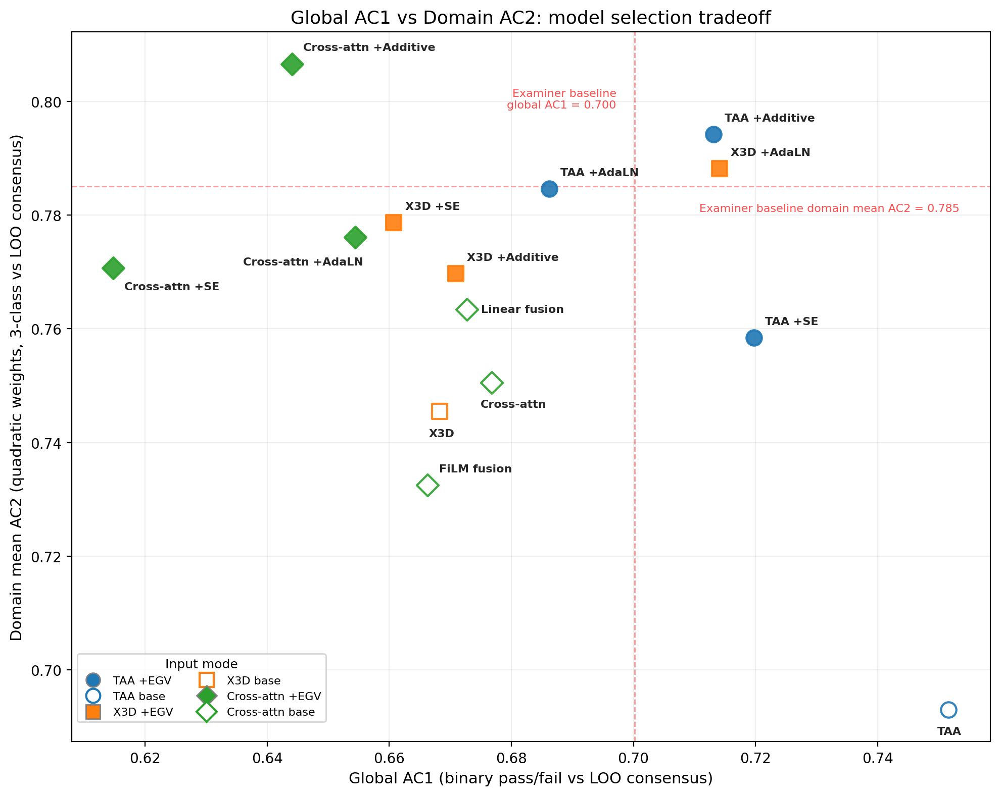

Original research · Clinical education
An examiner-conditioned AI second marker for VR OSCEs
A second pair of eyes for clinical skills exams: bringing together what a student did in VR and how an examiner assessed it.
npj Digital Medicine · · Open access

Figure 1. Model selection trade-offs. Each point represents a model configuration. Higher values indicate closer agreement with examiner consensus. The highest pass/fail agreement and highest mean domain agreement come from different model configurations.
Reproduced from Rogers et al. (2026), Figure 1, under CC BY 4.0. Open the full-size figure ↗
Why a second marker?
Objective Structured Clinical Examinations (OSCEs) assess practical clinical skills. A station is often marked by one examiner, whose judgement can be difficult to audit when a performance sits near the pass/fail boundary.
The team developed the Rater-Aware Verification Network (RAVEN) to review paediatric VR assessments. It considers the student’s recorded behaviour alongside the examiner’s assessment, giving a second perspective on difficult decisions.
Inside RAVEN
A simplified illustration of the intended review workflow, rather than a live demonstration of the model.
What does each evidence source contribute?
Video records the encounter from the student’s viewpoint. Action logs capture what happened and when. Examiner marks and, where available, verbal reasoning provide the assessment context.
Conditioning on the examiner means the AI reviews a particular assessment, rather than treating every examiner’s judgement as interchangeable.
Why does confidence matter?
In the retrospective experiment, confidence thresholds determined when AI predictions could influence the combined assessment. When confidence was below the threshold, the examiner’s rating remained unchanged.
The intended role is to identify cases for human review. No live examination outcomes were changed in this study.
What did the study find?
- Pass/fail agreement improved by 6.2 percentage points. The confidence-gated combination increased Gwet’s AC1 agreement with the other examiners’ consensus from 70.0% to 76.2%.
- Domain agreement improved by 3.0 points on average. Mean Gwet’s AC2 rose from 78.5% to 81.5%; five of the eight domains showed statistically significant gains.
- The largest gain was in borderline-fail cases. Agreement with consensus in that group increased from 57.0% to 73.3%, a 16.3 percentage point gain.
These numbers describe agreement with an examiner panel. They do not measure accuracy against an independent ground truth.
Reported results from the paper’s retrospective evaluation. AC1 and AC2 account for chance agreement; the borderline-fail result is a separate concordance measure.
What does this mean for assessment?
The work suggests a way to make disagreements more inspectable: link a marker’s assessment to evidence of what the student actually did. Comparing AI-inferred criteria, the rubric and examiner explanations also exposed assessment practices that the guidelines did not spell out.
What needs further testing?
This was a retrospective study, using a panel-derived reference. The combined system still made errors, and performance in new cohorts was less consistent. Prospective validation and careful human adjudication remain necessary before routine use.
The paper positions RAVEN as an audit and flagging aid. Final assessment decisions belong to the human examination process.
Behind the paper
Q&A with the author
Harry Rogers explains what motivated RAVEN, what the borderline cases revealed and what comes next.
What problem led you to develop RAVEN?
RAVEN was motivated by a reliability problem in OSCEs: a high-stakes performance is often judged by a single examiner, yet examiners can differ in what they notice, how they interpret criteria, and how they weight the same behaviours. That variation is difficult to audit because conventional OSCEs do not usually provide an objective record of exactly what the candidate did and when.
VR gave us that record, through timestamped actions and video, so we asked whether AI could act as an examiner-conditioned second marker—not replacing the examiner, but checking their judgement against the candidate's behaviour and providing a second source of evidence when appropriate.
What did you learn from the borderline cases?
The clearest benefit of RAVEN was at the pass/fail boundary. For borderline-fail cases, agreement with the leave-one-examiner-out consensus increased from 57.0% to 73.3%, a 16.3 percentage-point improvement.
Of 37 cases where the panel consensus disagreed with the examiner's fail, RAVEN corrected 17. Another 20 potential corrections were left unchanged because the model was not confident enough to intervene.
That taught us two things. First, AI appears most useful where human judgement is already uncertain, rather than on obvious passes or fails. Second, confidence gating matters: the value came from intervening selectively, not from allowing the model to override every disagreement.
What would you want to test before using it in routine exams?
The next step would be a prospective human-in-the-loop study. Rather than automatically changing marks, RAVEN would flag cases and examiners would decide whether to accept, reject or investigate the AI's evidence. We would want to test whether those flags actually improve agreement and decision quality once they begin influencing examiner behaviour.
We would also need external validation across different institutions, specialties, scenarios and OSCE formats, particularly because cross-cohort performance in the study was weaker than pooled performance. I would also want stronger reference panels for difficult cases, examiner training on how to interpret AI flags, explicit governance and appeals processes.
The paper's conclusion is deliberately conservative: until those prospective and external validations are done, RAVEN should be treated as an audit and flagging tool for human adjudication, not as an autonomous marker.
Have a question of your own? Email Harry about this paper.
Read and cite
Rogers, H., Shiels, S., Tomlinson, A. et al. An examiner-conditioned AI second marker for VR OSCEs. npj Digital Medicine (2026). https://doi.org/10.1038/s41746-026-03336-4
Publisher article · Full paper (PDF)
The study explainer summarises the paper; the interview contains the author’s own responses. The paper is an accepted article shared ahead of its final version and is licensed under CC BY 4.0.